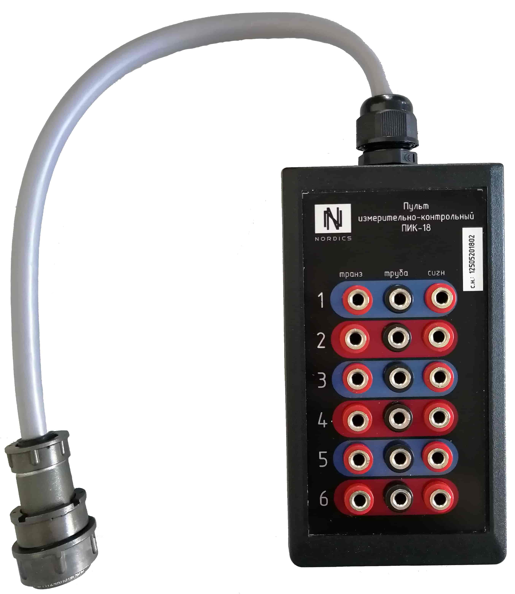

Компания НОРДИКС осуществляет свою деятельность с сфере строительства с 2009 года.
ООО "НОРДИКС" специализируется в проектировании и строительстве тепловых сетей и монтаже систем оперативного дистанционного контроля состояния изоляции тепловых сетей.
Осуществляем следующие виды работ: - монтаж тепловых сетей (ТС), - электрохимическая защита (ЭХЗ), - футеровка канализационных колодцев, - нанесение теплоизоляции методом напыления пенополиуретана (ППУ), - изолировка стыков ТС, - монтаж системы ОДК (СОДК), - монтаж индивидуальных тепловых пунктов (ИТП), - монтаж и ремонт котлов ПТВМ, - оформление и комлектование исполнительной документации для ТС, ОДК и котлов ПТВМ.
Также компания поставляет качественный и сертифицированный материал необходимый для монтажа ИТП и СОДК.
Неотъемлемой частью СОДК является кабель КСДК и его комплектующие.
|
КУТН-2 
|
8500 руб. |
КУТН-4 |
11000 руб. |
|
КУТН-6 |
15000 руб. |
Пульт  |
6500 руб. |
|
Гермоввод 
|
3700 руб. |
Ковер наземный 
|
12000 руб. |
Кабель КСДК

Разработанный кабель для системы оперативного дистанционного контроля (СОДК) марки КСДК, выполнен по строгим стандартам в заводских условиях. Применены современные технологии и высококачественные материалы, которые позволяют кабелю сохранять свои физико-химические свойства как при отрицательных, так и при повышенных температурах. Благодаря применению качественных материалов сигнал не подвержен воздействию вшених факторов, это позволяет снимать точные показания по локализации утечки в тепловых сетях. Кабель превосходит по показателям аналоги. В данной статье проводим сравнение кабеля КСДК с аналогами в отрасли строительства тепловых сетей, NYM и СОДК-П. Отличительной чертой кабеля для оперативного дистанционного контроля является его плоская форма, кабель имеет 3 (три) жилы.